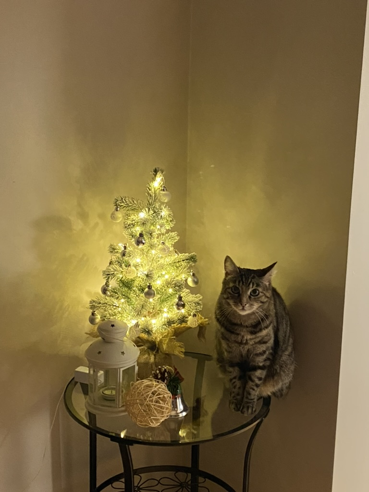

<html>
  <head>
<title> 
    Catsrules
</title>
<meta http-equiv="content-type" content="text/html; charset=UTF-8"/>
</head>
</html>

<body>
    <style>
        body {
          background: url('задний фон 2.0.png');
          background-repeat: no-repeat;
          background-size: cover;
        }
      </style>

    <h1 class = "text-center" style= "color:black">Обязанности по дому каждого котика </h1> <!--разобраться-->
    <style>.text-center {
      text-align: center;
    }
  </style>
<p>
    Добрый день, уважаемые посетители сайта!
    <br>Сегодня мы ознакомимся с основными обязанностями по дому каждого котика.
    <br> Но для начала я бы хотела показать вам мою кошечку
    <style>
      .fig {
       display: block; /* Блочный элемент (для старых браузеров) */
       text-align: center; /* Выравнивание по центру */
       font-style: italic; /* Курсивное начертание */
       margin-top: 0; /* Отступ сверху */
       margin-bottom: 5px; /* Отступ снизу */
       color: #666; /* Цвет подрисуночной подписи */
      }
     </style>
    <figure class="fig">  
    
    
    
    <figcaption>
      Вы только посмотрети на её мордочку
    </figcaption>
  </figure>
  </scr>
</p>
<style>
  mark {
    background-color: #ffec82 ;
  }
</style>
<hr> 
<h2>Домашние обязанности котиков</h2>
<div> 
<p> <storng><em><mark>Каждому хозяину своего питомца необходимо знать домашние обязанности своего друга!</mark></em></storng>
<ol type="1.">
  <li>Кот должен отсыпаться за человека, всех его родственников, друзей и соседей вместе взятых.
  </li>
  <li>Кот должен защищать человека от комнатных растений.
  </li>
   <li>Кот постоянно должен поддерживать человека в форме, заставляя его непрестанно двигаться по квартире, нагибаться, собирая ручки, карандаши, носки и т. д.
  </li>
  <li>Кот должен крепко держать зубами ручку или карандаш, пока человек пытается писать.
  </li>

  <li>Кот постоянно должен проводить ревизию в холодильнике, даже если человек этого не хочет. Если он не хочет, значит, что-то там прячет, и с этим что-то следует хорошенько разобраться, а потом уж призвать к ответу самого человека.
  </li>
  <li>Кот должен ночью каждый час проверять, не заползла ли под одеяло человеку какая-нибудь змея.
  </li>
   <li>Кот время от времени должен тренировать себя на случай непредвиденного циркового выступления. Для этого он должен периодически устраивать полеты под куполом дома, прыжки с гардины на люстру и обратно и другие всевозможные запрыгивания.  </li>
  <li>Кот должен помогать человеку стелить постель, внимательно наблюдая, чтобы под простыней не оказалось никаких предметов.
  </li>

  <li>Кот должен помнить, что сон для человека – это пустая трата времени, поэтому, завидев спящего человека, необходимо тут же его разбудить, прыгнув ему на живот, а еще лучше на голову.
  </li>
  <li>Кот должен каждое утро напоминать человеку старую пословицу: «Кто рано встает, тому Бог дает». И чем раньше встанет человек, тем больше ему (а заодно и коту) даст Бог.
  </li>
   <li>Кот должен делиться с человеком всем, что у него есть. Постоянно отдавать часть меха на утепление одежды и пола и выкидывать половину еды из чашки.
  </li>
  <li>Кот должен петь песни, чтобы доставлять человеку радость. Даже если песни грустные.
  </li>

  <li>Кот должен проверять, по какой причине кто-то не закрыл шкаф или тумбочку и не задвинул ящик.
  </li>
  <li>Кот должен отгонять от человека плохие сны. Если кот заметит, что человек ворочается в постели, он непременно должен прыгнуть человеку на голову и начать отгонять дурные сны и кошмары.
  </li>
   <li>Кот должен знать, что лежит во всех коробках и пакетах. И на личном опыте убедиться, насколько там удобно и хорошо находиться.
  </li>
  <li>Кот должен во время сна человека заглушать наружный шум, громко урча под ухом. 
  </li>
</ol>
</p>
</div>

<p> <strong>Скажите пожалуйста, вас устраивают такие обязанности вашего котика?</strong>
  <SELECT NAME="choice">
    <OPTION VALUE="Вариант 1">Да
     <OPTION VALUE="Вариант 2">Безусловно да!
    <OPTION VALUE="Вариант 3">Вариант 2
     <OPTION SELECTED>мяу
     </SELECT> 
</p>
<span>
  <br>
    Если у вас возникли <mark>мысли</mark> по поводу того, что <mark>вас не устраивают домашние обязанности котиков</mark>, то вы скорее всего:
<ul>
  <li>Что-то попутали, распутайтесь обратно</li>
  <li>Офигели</li>
  <li>Подумали неправильно, а теперь сидите и думайте над своим поведением</li>
</ul>
</span>
<p>Посмотреть больше фотокарточек моей кошки можно
<a href="kity.html" target="blank" alt="Ссылка для чего-то" title="Catsrules" width="500" height="300">тут</a>
  <br><b><i>Всем пока!</i> </b>
</p>
</body>